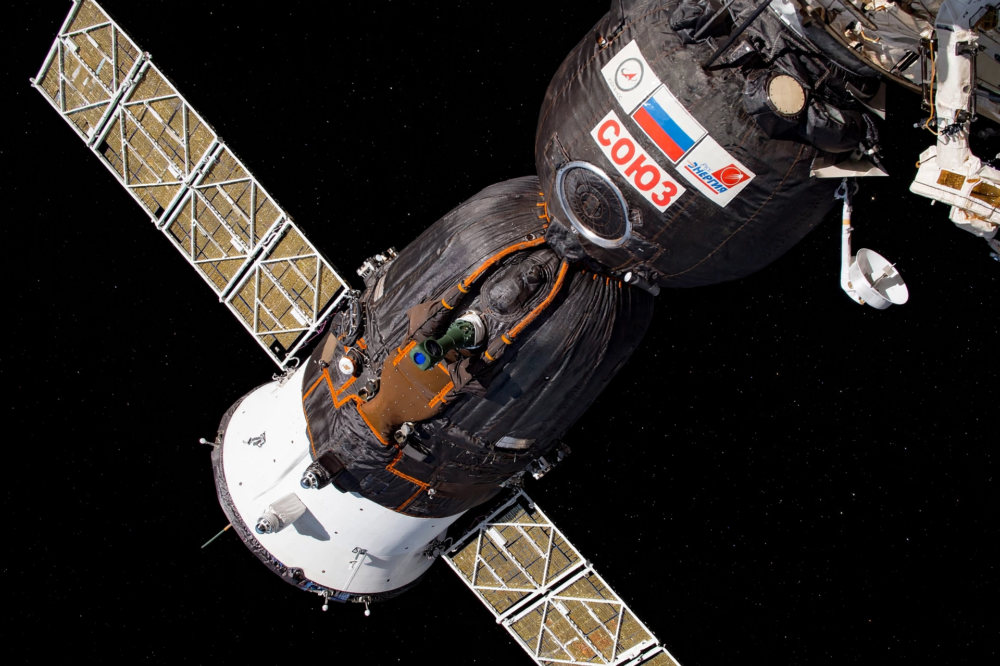

Soyuz MS
From Wikipedia, the free encyclopedia
| Soyuz MS | |
|---|---|
| Manufacturer | Energia |
| First flight | 7 July 2016 (MS-01) |
| Role | Crew transport to ISS |
| Changes vs TMA-M | New avionics, solar cells, Kurs-NA rendezvous, GLONASS) |

Soyuz MS in orbit.The Soyuz MS is the current crewed variant of Russia's Soyuz spacecraft, introduced in 2016 as the latest step in a design flying since 1967. Externally nearly identical to its predecessors — spherical orbital module, bell-shaped descent module, cylindrical service module with two solar wings — it modernised the internals: more efficient solar cells, redundant thrusters, the Kurs-NA rendezvous system, GLONASS-aided navigation and improved landing accuracy.
Soyuz MS flights have carried the station's crews through the type's notable episodes: MS-10's in-flight abort in October 2018 (the booster failure that proved the escape system again), MS-22's coolant leak in December 2022 — which left its crew without a ride home until an uncrewed replacement arrived — and the record-setting MS-25/MS-26 rotations that produced NASA's longest-serving single-flight astronaut handover. The type remains, with Crew Dragon, one of two crew vehicles serving the ISS.
Longevity
The MS series is expected to fly into the late 2020s, when Russia plans a successor (Orel) for its future station. That a capsule whose layout dates to Korolev's drafting table still flies — modernised in layers, like a ship of Theseus — is the central fact of Russian spaceflight: reliability through inheritance.
See also
Soyuz (spacecraft) · Crew Dragon · GLONASS · International Space Station